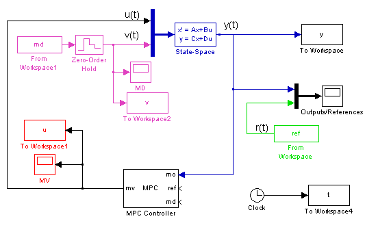
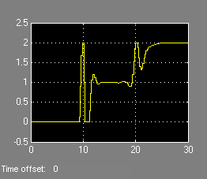
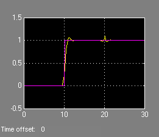
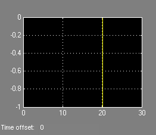
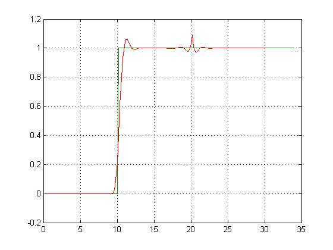
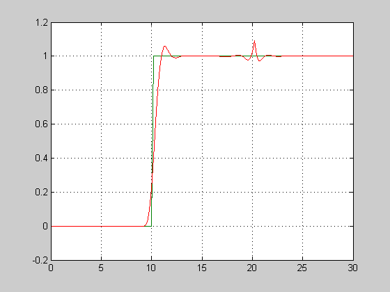
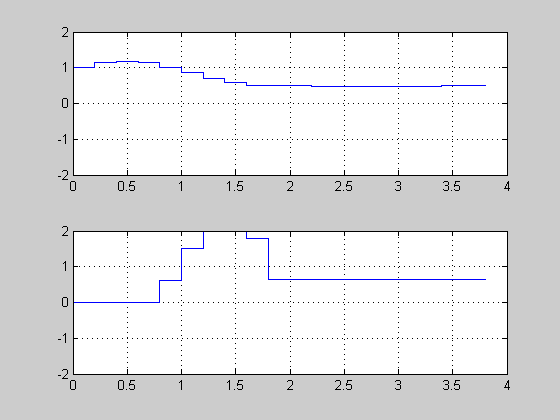
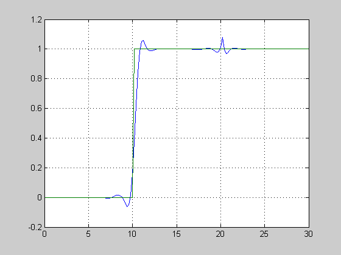

This demonstration shows how to use MPC control with anticipative action on reference and measured disturbance trajectories.
Author: A. Bemporad
We define an open-loop system with two inputs (one manipulated variable and one measured disturbance) and one output.
sys=ss(tf({1,1},{[1 .5 1],[1 1]}));
[A,B,C,D]=ssdata(sys);
x0=[0 0 0]'; % Initial plant state
Define type of input signals
sys=setmpcsignals(sys,'MV',1,'MD',2);
MPC object setup
Ts=.2; %Sampling time
Define constraints on the manipulated variable
MV=struct('Min',0,'Max',2); p=20; % prediction horizon m=10; % control horizon Weights=struct('MV',0,'MVRate',0.1,'Output',1); % weights
Create the MPC object
mpc1=mpc(sys,Ts,p,m,Weights,MV);
Tstop=30; %Simulation time
define the reference signal (used by both Simulink and the MPC object)
ref.time=0:Ts:(Tstop+p*Ts); ref.signals.values=double(ref.time>10)';
define the measured disturbance (used by both Simulink and the MPC object)
md.time=ref.time;
md.signals.values=-double(md.time>20)';
mpc_preview
sim('mpc_preview',Tstop)
-->Converting model to discrete time. -->Integrated white noise added on measured output channel #1 Warning: MPC problem is constrained and InputSpecs.RateMin is not completely specified or has infinite values. Setting values to -10 to prevent numerical problems in QP. (Type "warning off mpc:mpc_chkunconstr:inf" to suppress this warning.) -->No Model.Noise specified, assuming white noise on each measured output channel Warning: Input port 2 of 'mpc_preview/MPC Controller' is not connected. Warning: Input port 3 of 'mpc_preview/MPC Controller' is not connected.
manipulated
variable
measured output and
reference
measured disturbance
 
Let us run now the same simulation in Matlab. In order to compare results, we first store the results of the previous simulation in Simulink
t1=t; y1=y; v1=v; u1=u;
We run a simulation using SIM to compute the MPC closed-loop signals
time=0:Ts:Tstop; r=ref.signals.values; % reference signal v=md.signals.values; % measured disturbance signal params=mpcsimopt(mpc1); params.MDLookAhead='on'; params.RefLookAhead='on'; y=sim(mpc1,Tstop/Ts+1,r,v,params);
-->Converting model to discrete time. -->Integrated white noise added on measured output channel #1 -->No Model.Noise specified, assuming white noise on each measured output channel
Plot results and compare with the previous results -- They coincide
plot(time,y,ref.time,r,t1,y1) grid
We may just want to compute the MPC control action inside our simulation code. Let's see how to do this.
First we get the discrete-time state-space matrices of the plant
[A,B,C,D]=ssdata(c2d(sys,Ts));
We store the closed-loop MPC trajectories in arrays YY,RR
YY=[];
RR=[];
x=x0;
u=[];
xmpc=mpcstate(mpc1); % Initial state of the MPC controller
Main simulation loop
for t=0:round(Tstop/Ts), % Plant equations: output update y=C*x+D(:,2)*v(t+1); YY=[YY,y]; RR=[RR,r(t+1)]; % Compute MPC law u=mpcmove(mpc1,xmpc,y,r(t+1:t+p),v(t+1:t+p+1)); % Plant equations: state update x=A*x+B(:,1)*u+B(:,2)*v(t+1); end % Plot results close all plot(0:Ts:Tstop,YY,0:Ts:Tstop,RR,t1,y1) grid
If at any time during the simulation we want to check the optimal predicted trajectories, we can use an extended version of MPCMOVE. Assume we want to start from the current state and have a set-point change to 0.5 in 5 steps, and assume the measured disturbance has disappeared
r=[ones(5,1);0.5*ones(p-5,1)]; v=zeros(p+1,1); [u,Info]=mpcmove(mpc1,xmpc,y,r(1:p),v(1:p+1));
-->Converting model to discrete time. -->Integrated white noise added on measured output channel #1 -->No Model.Noise specified, assuming white noise on each measured output channel
We now extract the optimal predicted trajectories and plot them
topt=Info.Topt; yopt=Info.Yopt; uopt=Info.Uopt; close all subplot(211) title('Optimal sequence of predicted outputs') stairs(topt,yopt); grid axis([0 p*Ts -2 2]); subplot(212) title('Optimal sequence of manipulated variables') stairs(topt(1:p),uopt); axis([0 p*Ts -2 2]); grid
When the constraints are not active, the MPC controller behaves like a linear controller. We can then get the state-space form of the MPC controller, with y, [r(t);r(t+1);...;r(t+p-1)], and [v(t);v(t+1);...;v(t+p)] as inputs to the controller
Get state-space matrices of linearized controller
[LTIMPC,BLr,DLr,BLv,DLv]=ss(mpc1,'on','on'); [AL,BL,CL,DL]=ssdata(LTIMPC); time=0:Ts:Tstop+p; ref=double(time>10)'; v=-double(time>20)';
Get discrete-time plant model
[A,B,C,D]=ssdata(c2d(sys,Ts));
Initialization
YY=[]; RR=[]; x=x0; xL=[x0;0;0]; xmpc=mpcstate(mpc1); u=[];
Main simulation loop
for t=0:round(Tstop/Ts), % Plant output update y=C*x+D(:,2)*v(t+1); % Save output and refs value YY=[YY,y]; RR=[RR,ref(t+1)]; % Compute the linear MPC control action u=CL*xL+DL*y+DLr*ref(t+1:t+p)+DLv*v(t+1:t+p+1); % The following would be the input move provided by MPC: % uMPC=mpcmove(mpc1,xmpc,y,ref(t+1:t+p),v(t+1:t+p+1)); % Plant update x=A*x+B(:,1)*u+B(:,2)*v(t+1); % Controller update xL=AL*xL+BL*y+BLv*v(t+1:t+p+1)+BLr*ref(t+1:t+p); end
Plot results
close all
plot(0:Ts:Tstop,YY,0:Ts:Tstop,RR)
grid
